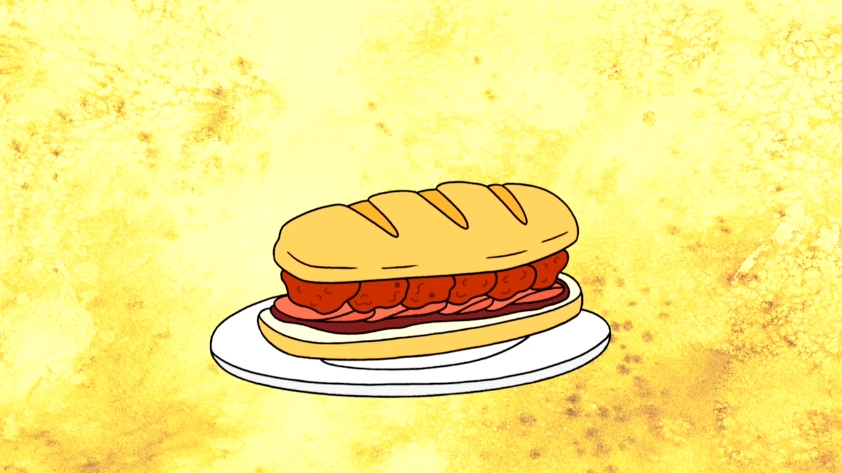

The Death Sandwich

A potentially deadly sandwich. Eat it right or die.
This sandwich is the most prized possession of Death Kwon Do Pizza and subs.
In order to eat it safely you are required to wear cut-off jeans and a mullet. I don't make the rules.
Ingredients
The sub:
- Sandwich roll
- An onion(medium)
- Ham slices
- Pork
- Parsley
- Cream(1/2 cup)
- One whole egg(large)
Red sauce:
- Can of tomatoes
- Tomato paste(3 tbsp)
- Olive oil(2 tbsp)
- Oregano
- Red pepper flakes(1/4 tsp)
- Basil
- 5 cloves of garlic
Instructions
Red Sauce:
- Thinly slice half of the onion.
- Heat a few tablespoons of olive oil over a stove top(medium heat) and add the onion slices.
- Saute for a few minutes and add garlic cloves, tomato paste, oregano(tsp) and red pepper flakes(1/4 tsp).
- Add the can of tomatoes and a bit of water to the mix.
- Lastly, add the basil to the sauce.
- Let it simmer for about 45 minutes.
Meatballs:
- Saute the other half of the onion and add a few cloves of crushed garlic.
- Chop herbs(parsley, basil) and add to a large bowl along with cream and one whole egg.
- Add pork to the mix and form into very large meatballs.
- Heat vegetable oil on a stove top and allow to brown on each side(2 mins).
Bring it all together:
- Spread sauce on the bottom half of the sandwich roll.
- Add the ham slices.
- Lay the meatballs on top of the ham and cover with the other half of the sandwich.
- I hope you signed the waiver of death. Enjoy!
Binging with Babish 4 Million Subscriber Special: Death Sandwich from Regular Show
Back to main page